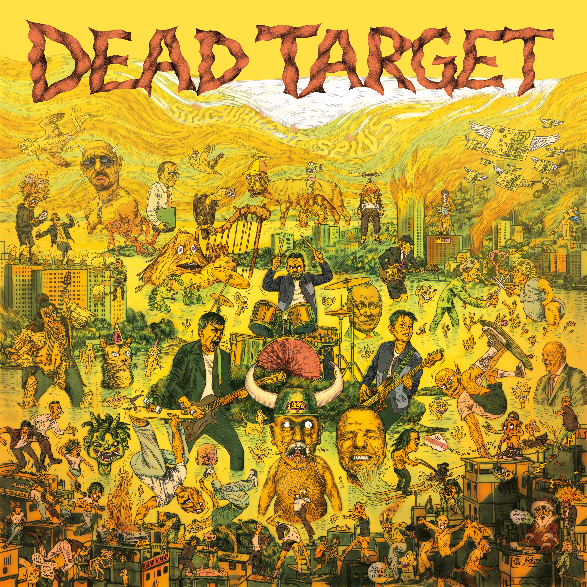

Vorab gehört
Dead Target - Still While It Spins

Hinweis: Still While It Spins erscheint offiziell am 23.10.2026. Dieser Text basiert auf vorab zur Verfügung gestelltem Material.
Dead Target kommen aus Hardanger in Norwegen und veröffentlichen ihr Debütalbum „Still While It Spins“ am 23.10.2026. RandaleFUNK durfte vorher reinhören.
Ich habe bisher genau drei Songs gehört:
„Presage“, „Here Comes Trouble“ und „Democracy“.
Mehr nicht.
Der Opener „Presage“ beginnt mit einem langen Intro. So ein Intro, bei dem man kurz hofft, dass die Stimme den Song gleich nicht kaputt macht.
Passiert nicht.
Und trotzdem ploppt in meinem Kopf ein Fragezeichen auf.
Flüstertüte?
Keine Ahnung. Irgendwas am Gesang irritiert mich. Nicht schlimm. Nur auffällig genug, dass ich kurz mehr über die Stimme nachdenke als über den Song.
Nächster Song.
„Here Comes Trouble“ klingt dann deutlich klarer.
Sehr beruhigend.
Auch wenn das mit Ruhe natürlich überhaupt nichts zu tun hat. Der Song hat schnellen Druck, zieht sauber nach vorne und erinnert mich an dieses 90er-Gefühl, bei dem Punkrock noch nicht ständig erklären musste, ob er jetzt Punkrock, Punk’n’Roll, Melodic Punk oder Versicherungsfall ist.
Und irgendwo, ganz entfernt, musste ich an Turbo A.C.’s denken.
Nicht als Kopie.
Eher als kleine Verwandtschaft im Dreck.
Mit „Democracy“ knallt es dann richtig.
Musikalisch wird das härter, direkter, unfreundlicher. Warum auch immer musste ich kurz an Voodoo Glow Skulls denken. Ergibt auf dem Papier kaum Sinn. War trotzdem da.
Inhaltlich wird es ebenfalls deutlich.
Demokratie bekommt hier keinen hübschen Rahmen und keinen goldenen „Alles funktioniert schon irgendwie“-Aufkleber. Der Song schaut eher dahin, wo sie wackelt, missbraucht wird oder irgendwann nur noch als Fassade herhalten soll.
Das ist kein braves „Politik ist kompliziert“-Schulterzucken.
Das ist eher:
Guck hin, du Lappen.
Das packt mich nicht, weil der Song mir Politik erklärt.
Sondern weil genug Unruhe hängen bleibt, dass ich selber weiterdenken muss.
Den Rest vom Album habe ich nicht gehört.
Dafür ist es zu schlecht.
Nein. Spaß.
Ich habe bewusst aufgehört, weil ich nach diesen drei Songs gemerkt habe: Diese Platte möchte ich nicht am Schreibtisch zu Ende hören.
Die muss raus.
Hund, Auto, Skateboard, Einkaufswagen - völlig egal.
Hauptsache Bewegung.
Den Rest höre ich draußen.
Und ein richtig fetter Gruß geht raus nach Schweden!
Danke für den Scheiß.
Dead Target auf Bandcamp
Dead Target auf Instagram
Dead Target auf Facebook
Merk: Still While It Spins slippes offisielt 23. oktober 2026. Denne teksten er basert på materiale som ble gjort tilgjengelig på forhånd.
Dead Target kommer fra Hardanger i Norge og slipper debutalbumet «Still While It Spins» 23. oktober 2026. RandaleFUNK fikk høre på det på forhånd.
Så langt har jeg hørt nøyaktig tre låter:
«Presage», «Here Comes Trouble» og «Democracy».
Ikke mer.
Åpningslåten «Presage» begynner med en lang intro. En sånn intro der man et øyeblikk håper at vokalen ikke skal ødelegge hele låten.
Det gjør den ikke.
Likevel dukker det opp et spørsmålstegn i hodet mitt.
Synger han gjennom en megafon?
Ingen anelse. Det er noe ved vokalen som forvirrer meg. Ikke noe alvorlig. Bare tydelig nok til at jeg et øyeblikk tenker mer på stemmen enn på låten.
Neste låt.
«Here Comes Trouble» låter mye klarere.
Veldig beroligende.
Selv om dette selvfølgelig ikke har noe som helst med ro å gjøre. Låten har høyt tempo og skikkelig trøkk, driver rent framover og minner meg om den 90-tallsfølelsen da punkrock ennå ikke hele tiden måtte forklare om den var punkrock, punk’n’roll, melodisk punk eller en forsikringssak.
Og et sted langt der bak måtte jeg tenke på Turbo A.C.’s.
Ikke som en kopi.
Mer som et fjernt slektskap i dritten.
Med «Democracy» smeller det skikkelig.
Musikalsk blir det hardere, mer direkte og mindre vennlig. Av en eller annen grunn måtte jeg et øyeblikk tenke på Voodoo Glow Skulls. Det gir knapt mening på papiret. Tanken var der likevel.
Innholdet blir også tydeligere.
Demokratiet får ingen pen ramme og ikke noe gullmerke med «Alt ordner seg sikkert». Låten ser heller på stedene der det vakler, misbrukes eller til slutt bare brukes som fasade.
Dette er ikke et lydig «politikk er komplisert»-skuldertrekk.
Det er mer:
Følg med, din dust.
Det treffer meg ikke fordi låten forklarer politikk for meg.
Men fordi den etterlater nok uro til at jeg må tenke videre selv.
Jeg har ikke hørt resten av albumet.
Det er for dårlig.
Nei da. Bare kødda.
Jeg stoppet med vilje, fordi jeg etter disse tre låtene skjønte én ting: Jeg vil ikke høre ferdig denne plata ved skrivebordet.
Den må ut.
Hund, bil, skateboard, handlevogn - helt likegyldig.
Bare det er bevegelse.
Resten hører jeg ute.
Og en skikkelig feit hilsen går ut til Sverige!
Takk for dritten.
Dead Target på Bandcamp
Dead Target på Instagram
Dead Target på Facebook
Note: Still While It Spins will be officially released on October 23, 2026. This article is based on material provided in advance.
Dead Target are from Hardanger, Norway, and will release their debut album “Still While It Spins” on October 23, 2026. RandaleFUNK got an early listen.
So far, I have listened to exactly three songs:
“Presage,” “Here Comes Trouble,” and “Democracy.”
Nothing else.
The opener, “Presage,” starts with a long intro. The kind of intro that makes you briefly hope the vocals are not about to ruin the song.
They don't.
And yet a question mark pops up in my head.
Is he singing through a megaphone?
No idea. Something about the vocals throws me off. Nothing serious. Just noticeable enough that, for a moment, I am thinking more about the voice than the song.
Next track.
“Here Comes Trouble” sounds much clearer.
Very reassuring.
Even though this obviously has nothing to do with being calm. The song hits fast, drives forward cleanly, and brings back that '90s feeling when punk rock did not constantly have to explain whether it was punk rock, punk’n’roll, melodic punk, or an insurance claim.
And somewhere, very faintly, it made me think of Turbo A.C.’s.
Not as a copy.
More like a distant family connection in the dirt.
Then “Democracy” really hits.
Musically, it gets harder, more direct, and less friendly. For whatever reason, Voodoo Glow Skulls briefly came to mind. It barely makes sense on paper. The thought was there anyway.
The lyrics get more direct, too.
Democracy does not get a pretty frame or a gold “Everything will probably work out” sticker here. The song looks at the places where it starts to wobble, gets abused, or eventually serves as nothing more than a facade.
This is not a polite “politics is complicated” shrug.
It is more like:
Pay attention, jackass.
It does not grab me because the song explains politics to me.
It grabs me because it leaves behind enough unease to make me keep thinking for myself.
I have not listened to the rest of the album.
It is too terrible.
No. Kidding.
I stopped on purpose because, after those three songs, I realized something: I do not want to finish this record at my desk.
It needs to go outside.
Dog, car, skateboard, shopping cart - whatever.
Just keep moving.
I will listen to the rest outdoors.
And a huge shout-out goes to Sweden!
Thanks for this shit.
Dead Target on Bandcamp
Dead Target on Instagram
Dead Target on Facebook